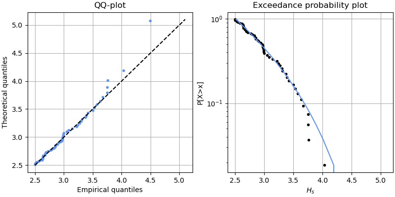

GPD: m Return Levels#
Now you know a bit more about the GPD distribution. Here, we will see some considerations to keep in mind when applying it to model extremes.
MUDE exam information
In this section, the derivation to go from m-observations return levels to N-years return levels is provided based on the Poisson model for extremes. You are not required to know the derivation for the exam, it is shown as background information so you know where it is coming from. You need to know how to compute return levels from a Generalized Pareto distribution, as shown in the section “Let’s apply it”.
We already saw that we are interested in evaluating the return level of the studied variable: the \(N\)-year return level \(x_N\), which is expected to be exceeded once every \(N\) years. How can we do that?
Imagine that we have already fitted a GPD with \(\xi \neq 0\), so the exceedance probabilities can be computed as
\( P[X>x|X>th] = \left(1+\frac{\xi (x-th)}{\sigma_{th}}\right)^{-1/\xi} \)
GPD is a conditional distribution (\(X>th\)), so we need to account for the probability of being above the threshold and, thus, observing an excess, \(P[X>th] = \zeta_{th}\). Therefore, writing it in terms of exceedance probabilities
\( P[X>x]=P[X>th] \ P[X>x|X>th] = \zeta_{th} \ \left(1+\frac{\xi (x-th)}{\sigma_{th}}\right)^{-1/\xi} \)
Note that \(\zeta_{th}\) depends on the selected threshold.
Then, the return level \(x_m\) exceeded in average every \(m\) observations is computed as
\( 1/m = \zeta_{th} \left[ 1+\xi \frac{(x_m-th)}{\sigma_{th}}\right]^{-1/ \xi} \)
which leads to
\( x_m = th + \frac{\sigma_{th}}{\xi} \left[(m\zeta_{th})^{\xi}-1\right] \)
which is valid for large values of \(m\) to ensure \(x_m > th\).
For \(\xi = 0\) the same procedure can be performed, obtaining
\( x_m = th + \sigma_{th} log(m\zeta_{th}) \)
\(x_m\) is called the \(m\)-observations return level.
From \(m\)-observations to \(N\)-years#
In Engineering and Geosciences, we typically work with \(N\)-year return levels (what we defined as the Return Period). Then, we need to account for the number of observations per year, \(n_y\), being \(m=N \times n_y\). Applying this in the previously derived equations, we can compute the \(N\)-year return level as
\( x_N = \left\{ \begin{array}{ll} th + \frac{\sigma_{th}}{\xi}[(N n_y \zeta_{th})^{\xi}-1] \hspace{1cm} for \ \xi \neq 0\\ th + \sigma_{th} log(N n_y\zeta_{th})\hspace{1.4cm} for \ \xi = 0 \end{array} \right. \)
Therefore, if we want to calculate the return level associated with a return period of 10 years, \(m=10 \times n_y\).
But how can we compute the probability of being above the threshold and, thus, observing an excess, \(P[X>th] = \zeta_{th}\)?
You have already seen how the Poisson distribution helps us modelling the number of excesses over a threshold when performing POT. Here, we will use this distribution to compute the probability of being above the threshold \(P[X>th] = \zeta_{th}\) and, thus, the return levels based on a GPD distribution.
Computing \(N\)-years return levels#
In the previous sections, we reached the following expression to calculate the return levels
\( x_N = \left\{ \begin{array}{ll} th + \frac{\sigma_{th}}{\xi}[(N n_y \zeta_{th})^{\xi}-1] \hspace{1cm} for \ \xi \neq 0\\ th + \sigma_{th} log(N n_y\zeta_{th})\hspace{1.4cm} for \ \xi = 0 \end{array} \right. \)
where \(x_N\) is the \(N\)-years return level, \(th\) the threshold, \(\sigma_{th}\) and \(\xi\) are the fitted parameters of the GPD, \(n_y\) is the average number of observations per year and \(\zeta_{th}\) is the probability of observing an exceedance.
We saw that we can model the number of exceedances per year using a Poisson distribution and that this distribution is characterized by a parameter \(\lambda\) equal to the mean and standard deviation of the random variable. Thus, we can calculate \(\zeta_{th}\) 1 as
\( \hat{\zeta}_{th} = \frac{\hat{\lambda}}{n_y} \)
where \(\hat{\lambda}\) can be estimated as the average number of exceedances per year as
\( \hat{\lambda} = \frac{n_{th}}{M} \)
being \(n_{th}\) the total number of sampled exceedances and \(M\) the number of years in the database.
Updating the first equation using the Poisson distribution, we obtain
\( x_N = \left\{ \begin{array}{ll} th + \frac{\sigma_{th}}{\xi}[(\lambda N)^{\xi}-1] \hspace{1cm} for \ \xi \neq 0\\ th + \sigma_{th} log(\lambda N)\hspace{1.4cm} for \ \xi = 0 \end{array} \right. \)
or
\( x_N = \left\{ \begin{array}{ll} th + \frac{\sigma_{th}}{\xi}[(\frac{n_{th}}{M} N)^{\xi}-1] \hspace{1cm} for \ \xi \neq 0\\ th + \sigma_{th} log(\frac{n_{th}}{M} N)\hspace{1.4cm} for \ \xi = 0 \end{array} \right. \)
Let’s apply it!#
Moving back to our example, we were interested in estimating \(H_s\) with a \(RT = 100\ years\). We had 20 years of hourly recordings in our buoy and, using \(th = 2.5m\) and \(dt = 48h\), we sampled 54 excesses.
First, we fit the parameters of our distribution using the sampled excesses (not the actual value of the random variable), \(\sigma_{th}\) and \(\xi\) using Maximum Loglikelihood Estimator. We obtain \(\sigma_{th}=0.69\) and \(\xi=-0.27\).
Once we have fitted the parameters, we check the goodness of fit of such fitting. Below, the QQ-plot and the exceedance probability plot in logarithmic scale are presented.

Fig. 7.23 Goodness of fit for Poisson distribution.#
The fitting is reasonable, so we can use the fitted distribution to determine the return level associated to a \(RT = 100 \ years\). We have \(M=20 \ years\) of observations and \(n_{th} = 54 \ events\). Thus, \(\hat{\lambda} = 54/20 = 2.7\). Applying the previous expression for \(\xi \neq 0\)
\( x_{100 \ years} = th + \frac{\sigma_{th}}{\xi}[(\lambda N)^{\xi}-1] = 2.5 + \frac{0.69}{-0.27}[(2.7 \times 100)^{-0.27}-1] = 4.49 \ m \)
Thus, the design wave height with a \(RT=100 \ years\) is 4.49m based on our Extreme Value Analysis. Congratulations! You have performed your first Extreme Value Analysis using POT and GPD!
Let’s practice!#
A colleague is performing EVA to determine the maximum design wind loading in a building. The engineer retrieved a timeseries of wind speeds of 17 years and used POT to sample the extremes within the timeseries. The engineer obtained 68 extreme excesses.
What is the average number of exceedances per year?
Answer
The number of years is \(M = 17\) and the total number of exceedances is \(n_{th}=68\). Thus, we can compute the average number of exceedances per year as
\( \hat{\lambda} = \frac{n_{th}}{M} = 68/17 = 4 \)
Our colleague has fitted a GPD on the obtained excesses using a threshold \(th=40\)km/h. The fitted parameters are \(\sigma_{th} = 4.1\) and \(\xi = 0.3\). What is the 25 years-return level?
Answer
\( x_{25 \ years} = th + \frac{\sigma_{th}}{\xi}[(\lambda N)^{\xi}-1] = 40 + \frac{4.1}{0.3}[(4 \times 25)^{0.3}-1] = 80.7 \ km/h \)
Finally, our colleague has decided to apply monthly maxima and, thus, fit a GEV to the selected observations. Since 17 years of data are available, 204 extreme observations are obtained. The fitted parameters of the GEV are \(\mu=37\), \(\sigma=5\), and \(\xi=0.3\).
Answer
Considering that the GEV has been fitted using monthly extremes, this distribution will provide the monthly non-exceedance probabilities. Then, we need to calculate what is the monthly non-exceedance probability that corresponds to a return period of 25 years. Since we are working with the monthly extremes, we know that \(\lambda = 12\), as we have 12 observations per year. Thus, the monthly exceedance probability (\(p_{f, m}\)) can be computed as
\( p_{f,y} = \lambda p_{f,m} \to p_{f,m} = \frac{p_{f,y}}{\lambda} = \frac{1/25}{12} = 0.0033 \)
After that, we can apply the CDF of the GEV distribution as
\( x_{25 \ years} = \mu - \frac{\sigma}{\xi}[1-\{-log(1 - p_{f, m})\}^{-\xi}] \)
\( x_{25 \ years} = 37 - \frac{5}{0.3}[1-\{-log(1-0.0033)\}^{-0.3}] = 112.5 \ km/h \)
- 1
Note that in mathematics, \(\hat{\lambda}\) denotes the estimation of \(\lambda\).